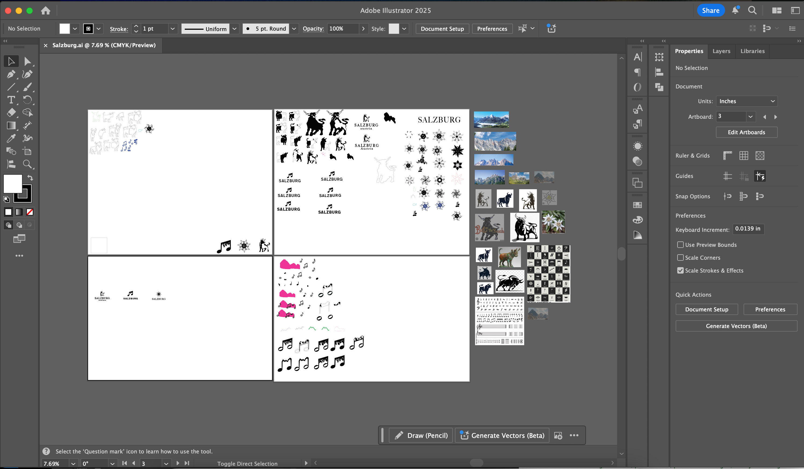
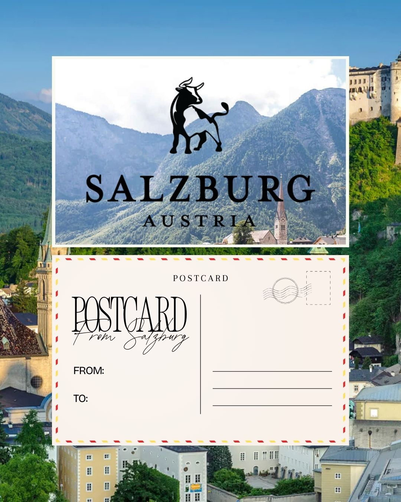
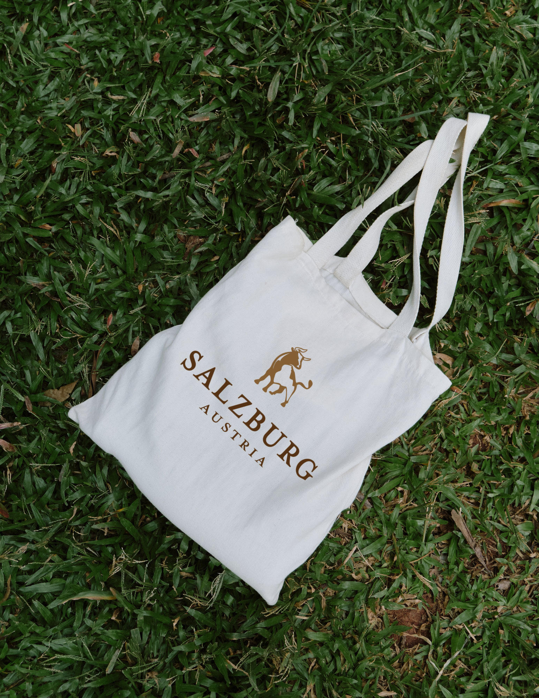

logo design
Salzburg, Austria
Client: The City of Salzburg
Project Type: Brand Identity
Competencies: Illustration, Iconography
Software: Illustrator, Photoshop
braindstroming process
I began by researching the city's culture, legends, art, and music to understand its visual and historical identity. After selecting three core themes, I gathered multiple reference images for each. For the bull motif, I combined different visual elements into a cohesive design. For the music theme, I studied musical notes and adapted one to create the Edelweiss motif, experimenting with shape and form to make it feel connected to the theme. This process allowed me to turn abstract ideas into clear, original visual concepts while staying true to the city's character.
sketches
Illustrator Artboard

Finalization
option 1:
Salzburger Stierwascher
I chose the bull as a symbol for Salzburg based on the Salzburger Stierwascher legend, which reflects the city's strength, cleverness, and pride: during a 16th-century siege, when only one bull remained, locals repeatedly repainted and paraded it along the city walls to create the illusion of plentiful food, ultimately tricking their enemies into retreating. To further connect the design to Salzburg, I incorporated the shape of the surrounding mountains into the bull's body, linking the city's rich history with its natural landscape in one simple, meaningful image.
option 2:
Sound of Alpine
Inspired by Salzburg's iconic mountains and rich musical heritage, this logo blends nature and art into one elegant symbol, with the mountain range forming the beam between two eighth notes as a subtle nod to the city's rhythm and identity. As the birthplace of Mozart and home to world-renowned events like the Salzburg Festival, Salzburg lives and breathes music, and this design captures that spirit by uniting its natural landscape with its cultural soundscape in one simple, meaningful image that can be seen as both a geographic silhouette and a musical motif.
option 3:
Edelwiss
The edelweiss symbolizes rarity, resilience, and quiet elegance, long associated with the beauty of the Alpine landscape. Inspired by Salzburg—a city known for its breathtaking scenery and deep musical heritage as the birthplace of Mozart and the setting of The Sound of Music—this logo blends nature and creativity into one design. Subtle musical notes are woven into the flower, uniting Salzburg's natural beauty with its rich cultural soundscape in a simple, expressive image.

